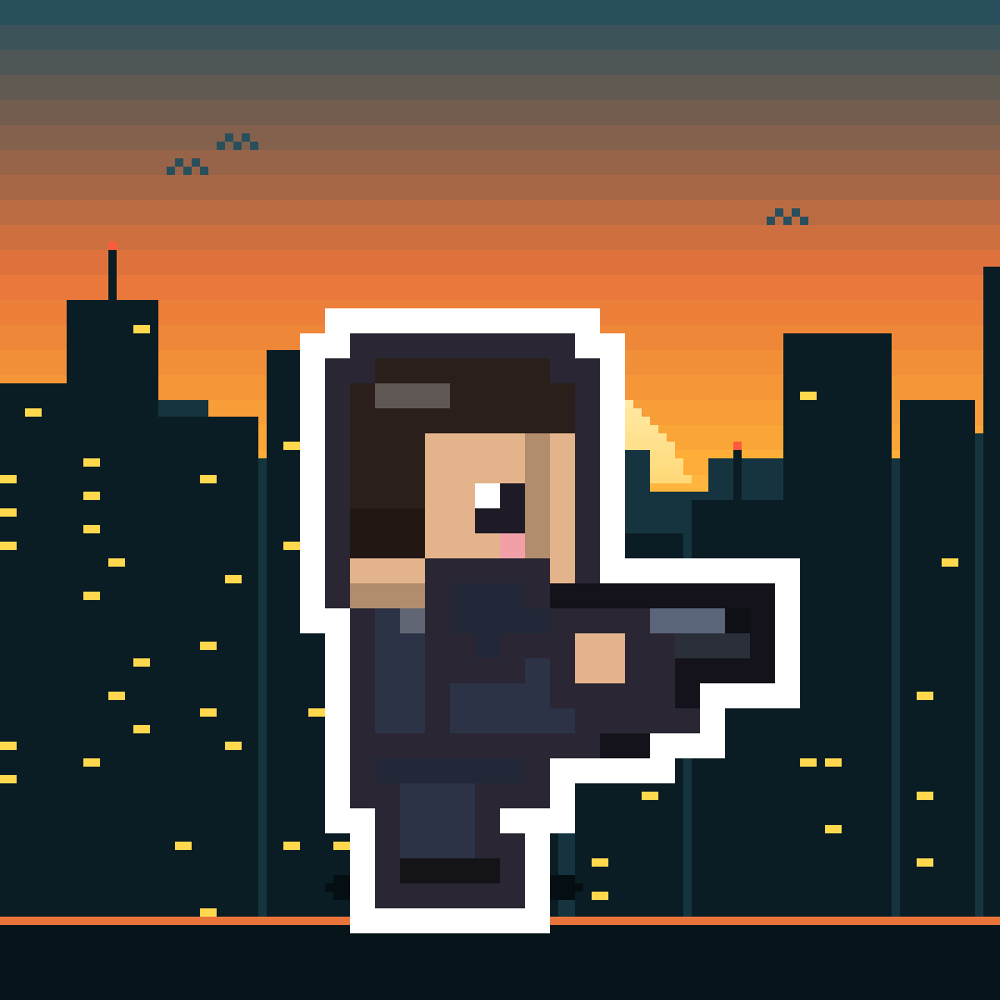
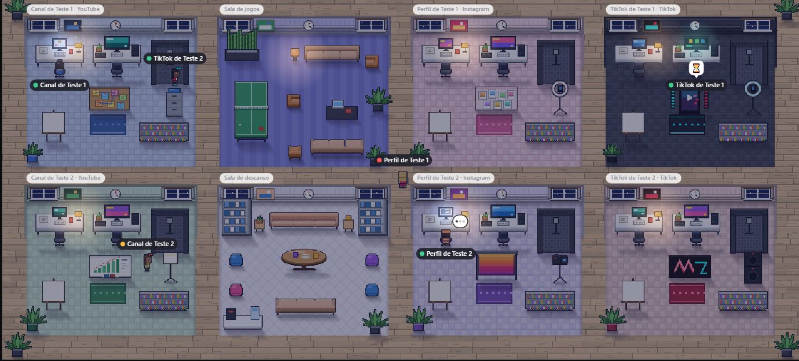
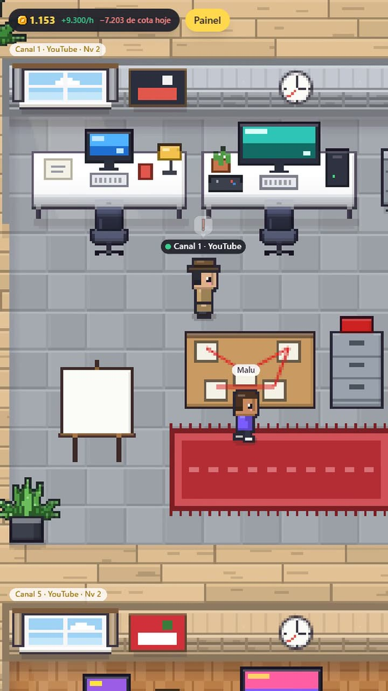
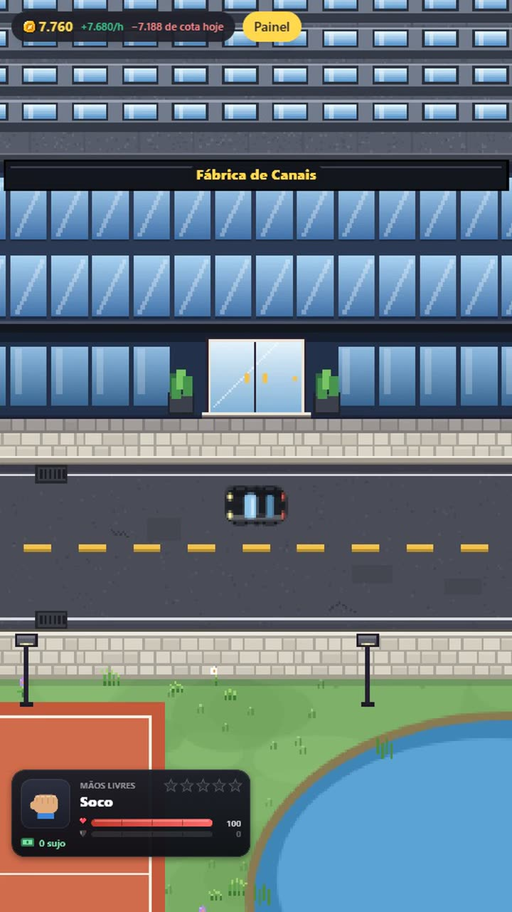
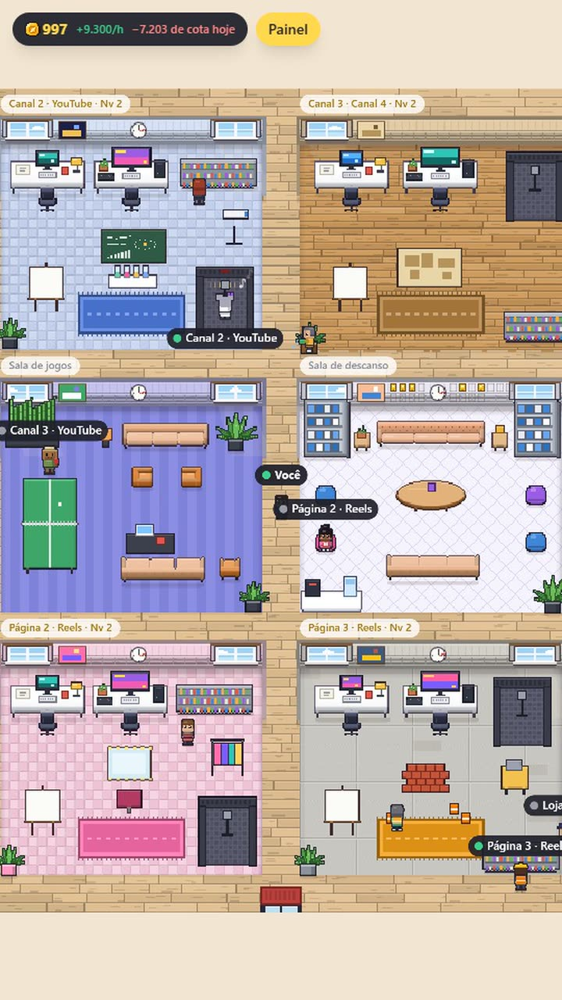

VIRAL CITY
Um jogo de construir um império na cidade enquanto agentes de IA produzem os vídeos das redes.
-

NOVO Fábrica de Conteúdo Faz os vídeos do seu canal com IA, no seu computador -

APRENDA Vídeos com IA: do zero à monetização 11 aulas e 3 bônus, do roteiro à monetização -

Ganhe um lugar na cidade Apoie o jogo e vire morador ou dono de loja -

Conheça o Viral City O jogo e o sistema, construídos em público